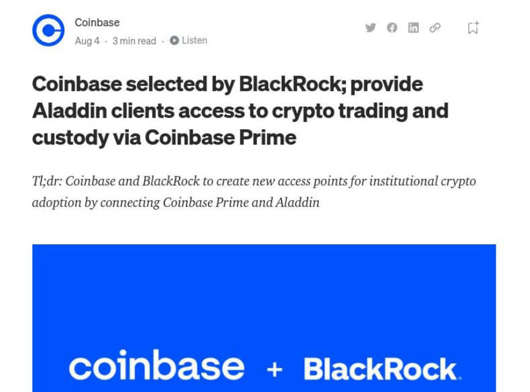
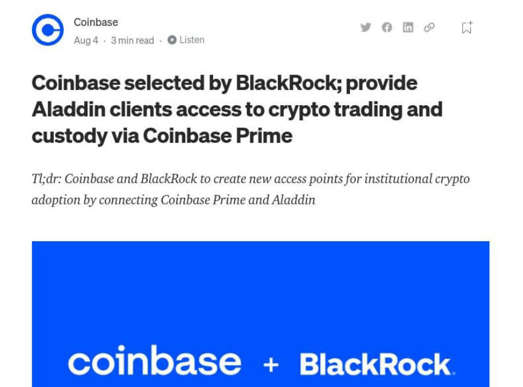

International Crypto Exchanges Blocked in Uzbekistan
~1 min read | Published on 2022-08-12, tagged Exchange using 233 words.
The websites of international cryptocurrency exchanges have been blocked in Uzbekistan.
Binance, Huobi, FTX, and others are among the cryptocurrency exchanges impacted by the action.
The National Agency for Perspective Projects (NAPP) announced that international cryptocurrency exchanges were blocked because of licensing or data storage issues. Only one cryptocurrency exchange, UZNEX, has registered with the relevant authorities in the country. Additionally, the international exchanges were storing the data of Uzbekistan citizens outside of the country.
“[The exchanges] were asking for personal data from citizens without taking account of the requirements for hosting servers on the territory of the Republic of Uzbekistan in the manner set out by law,” NAPP explained.
Eurasianet speculated about the reason for the ban:
“The crackdown could be linked to fears about the risks of cryptocurrency being abused as a tool for sanctions dodging by Russians.”
lol
abused
In April 2022, Uzbekistan President Shavkat Mirziyoyev signed a decree “regulating cryptocurrencies and assigned the National Agency for Perspective Projects the role of the industry’s watchdog.” The agency explained that after January 2023, citizens of Uzbekistan would only be permitted to use licensed cryptocurrency exchanges.
“From the moment [the decree was published], we did not block foreign platforms, as we understand that our citizens have funds on these platforms. But this measure did not mean that citizens can safely trade on foreign platforms until January 1, 2023. There has already been a ban on this since 2019,” the NAPP specified.

Binance, Huobi, FTX, and others are among the cryptocurrency exchanges impacted by the action.
The National Agency for Perspective Projects (NAPP) announced that international cryptocurrency exchanges were blocked because of licensing or data storage issues. Only one cryptocurrency exchange, UZNEX, has registered with the relevant authorities in the country. Additionally, the international exchanges were storing the data of Uzbekistan citizens outside of the country.
“[The exchanges] were asking for personal data from citizens without taking account of the requirements for hosting servers on the territory of the Republic of Uzbekistan in the manner set out by law,” NAPP explained.
Eurasianet speculated about the reason for the ban:
“The crackdown could be linked to fears about the risks of cryptocurrency being abused as a tool for sanctions dodging by Russians.”
lol
abused
In April 2022, Uzbekistan President Shavkat Mirziyoyev signed a decree “regulating cryptocurrencies and assigned the National Agency for Perspective Projects the role of the industry’s watchdog.” The agency explained that after January 2023, citizens of Uzbekistan would only be permitted to use licensed cryptocurrency exchanges.
“From the moment [the decree was published], we did not block foreign platforms, as we understand that our citizens have funds on these platforms. But this measure did not mean that citizens can safely trade on foreign platforms until January 1, 2023. There has already been a ban on this since 2019,” the NAPP specified.

Predictable!